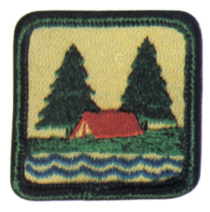
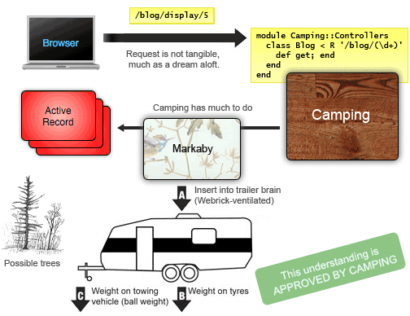
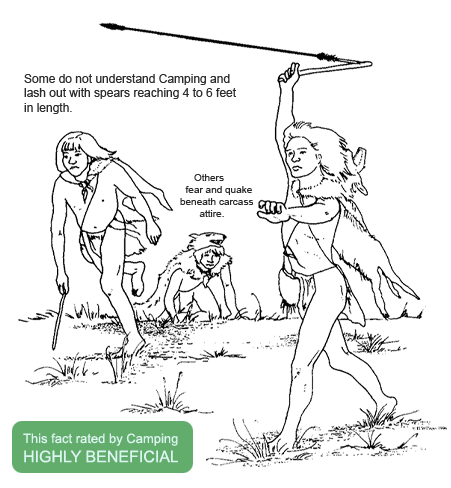
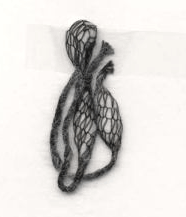
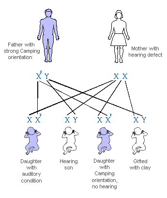
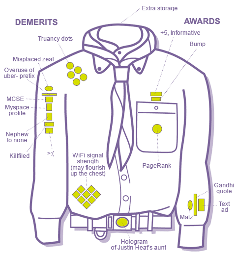
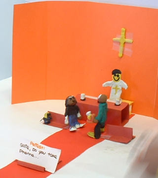
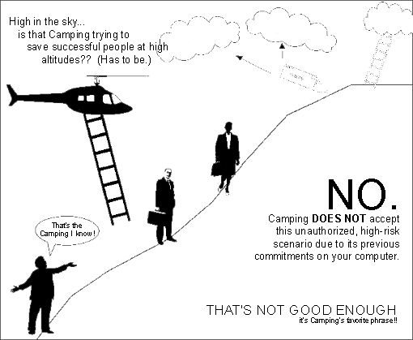

Camping is a Microframework #
First, as a mural. For friends here who like to pick at the weave.
%w[rubygems active_record markaby metaid ostruct].each {|lib| require lib}
module Camping;C=self;module Models;end;Models::Base=ActiveRecord::Base
module Helpers;def R c,*args;p=/\(.+?\)/;args.inject(c.urls.detect{|x|x.
scan(p).size==args.size}.dup){|str,a|str.gsub(p,(a.method(a.class.primary_key
)[]rescue a).to_s)};end;def / p;File.join(@root,p) end;end;module Controllers
module Base;include Helpers;attr_accessor :input,:cookies,:headers,:body,
:status,:root;def method_missing(m,*args,&blk);str=m==:render ? markaview(
*args,&blk):eval("markaby.#{m}(*args,&blk)");str=markaview(:layout){str
}rescue nil;r(200,str.to_s);end;def r(s,b,h={});@status=s;@headers.merge!(h)
@body=b;end;def redirect(c,*args);c=R(c,*args)if c.respond_to?:urls;r(302,'',
'Location'=>self/c);end;def service(r,e,m,a);@status,@headers,@root=200,{},e[
'SCRIPT_NAME'];@cookies=C.cookie_parse(e['HTTP_COOKIE']||e['COOKIE']);cook=
@cookies.marshal_dump.dup;if ("POST"==e['REQUEST_METHOD'])and %r|\Amultipart\
/form-data.*boundary=\"?([^\";,]+)\"?|n.match(e['CONTENT_TYPE']);return r(500,
"No multipart/form-data supported.")else;@input=C.qs_parse(e['REQUEST_METHOD'
]=="POST"?r.read(e['CONTENT_LENGTH'].to_i):e['QUERY_STRING']);end;@body=
method(m.downcase).call(*a);@headers["Set-Cookie"]=@cookies.marshal_dump.map{
|k,v|"#{k}=#{C.escape(v)}; path=/"if v != cook[k]}.compact;self;end;def to_s
"Status: #{@status}\n#{{'Content-Type'=>'text/html'}.merge(@headers).map{|k,v|
v.to_a.map{|v2|"#{k}: #{v2}"}}.flatten.join("\n")}\n\n#{@body}";end;def \
markaby;Class.new(Markaby::Builder){@root=@root;include Views;def tag!(*g,&b)
[:href,:action].each{|a|(g.last[a]=self./(g.last[a]))rescue 0};super end}.new(
instance_variables.map{|iv|[iv[1..-1].intern,instance_variable_get(iv)]},{})
end;def markaview(m,*args,&blk);markaby.instance_eval{Views.instance_method(m
).bind(self).call(*args, &blk);self}.to_s;end;end;class R;include Base end
class NotFound<R;def get(p);r(404,div{h1("#{C} Problem!")+h2("#{p} not found")
});end end;class ServerError<R;def get(k,m,e);r(500,markaby.div{h1 "#{C} Prob\
lem!";h2 "#{k}.#{m}";h3 "#{e.class} #{e.message}:";ul{e.backtrace.each{|bt|li(
bt)}}})end end;class<<self;def R(*urls);Class.new(R){meta_def(:inherited){|c|
c.meta_def(:urls){urls}}};end;def D(path);constants.each{|c|k=const_get(c)
return k,$~[1..-1] if (k.urls rescue "/#{c.downcase}").find {|x|path=~/^#{x}\
\/?$/}};[NotFound,[path]];end end end;class<<self;def escape(s);s.to_s.gsub(
/([^ a-zA-Z0-9_.-]+)/n){'%'+$1.unpack('H2'*$1.size).join('%').upcase}.tr(' ',
'+') end;def unescape(s);s.tr('+', ' ').gsub(/((?:%[0-9a-fA-F]{2})+)/n){[$1.
delete('%')].pack('H*')} end;def qs_parse(qs,d='&;');OpenStruct.new((qs||'').
split(/[#{d}] */n).inject({}){|hsh,p|k,v=p.split('=',2).map{|v|unescape(v)}
hsh[k]=v unless v.empty?;hsh}) end;def cookie_parse(s);c=qs_parse(s,';,') end
def run(r=$stdin,w=$stdout);w<<begin;k,a=Controllers.D "/#{ENV['PATH_INFO']}".
gsub(%r!/+!,'/');m=ENV['REQUEST_METHOD']||"GET";k.class_eval{include C
include Controllers::Base;include Models};o=k.new;o.service(r,ENV,m,a);rescue\
=>e;Controllers::ServerError.new.service(r,ENV,"GET",[k,m,e]);end;end;end
module Views; include Controllers; include Helpers end;end

gem install camping --source http://code.whytheluckystiff.net/- Installs the regular camping.rb.
- ... and dependencies
activerecord,markabyandmetaid.
- For an example, see the blog.
Update:

Update: Field Office Outpost Bravo Bravo reports.

Update: Ranger Douglas has sent word.

Many rangers, myself included, returned from their morning jaunt to find this tiny yarn insignia fastened to their ranger doors without explanation. It seems peaceful, like something Camping would do, but you never know. Radicals often portray future animal executions in the simplest of strokes.
Camping has not had the time or inclination to rate and classify this message, so it is being displayed in its true, unfiltered form.
Update: Reader Justin Heat sent in this awful photo.
He says, “At my aunt’s viewing. Snapped a pic for you with my Treo 650.”
Off-topic. And NOT funny. Let’s start focusing on getting through this day before we talk about this kind of stuff. For crying out loud.
Update: What luck, this month’s Boy’s Life has a feature story for PDF subscribers only. Very in-depth. An excerpt:

Update: from #camping.
20:11 <goalie> can camping do e-commerce? 20:11 <_why> no, use rails 20:11 <RangerCliff> heh wtf? 20:13 <goalie> it's just a small store, we only have two products 20:13 <goalie> root beer lip balm and cream soda lip balm 20:13 * _why contemplates 20:14 <goalie> mail-order only 20:14 <_why> now you're talking!!
Update: 2006 uniforms are in.

Update:
Update: You may now clip the following article from your handbooks, the Camping Phys Ed staff has ejected it from the curriculum!
Update:
If you are looking for Doggles, they can be found here.
Matthew Cartwright from Aberdeen, WA, writes in:

My nine-year-old daughter has been captivated with Camping over the last day or so. We even got her a little tackle box to put all her supplies in. Her excitement really came to a crescendo when she read your story about Ranger Cliff hanging out in IRC. She’s been non-stop Ranger Cliff all morning.
Anyway, she’s now filming a stop-motion film about the wedding of Ranger Cliff, I’m including a still frame I just snapped over her shoulder. Ranger Cliff is the little, rotund, dark fellow.
Great work, Katy! You’ve nailed the Ranger. His balance is abyssmal.
Update: Photos are piling up on Flickr now that everyone’s back from CampingCamp, held last night at Ranger Mayhew’s house in Minneapolis. Jealous.
Alex Chanticlair took the following photo and adds:
Troops 142 and 146 were in attendance. Many a glowstick was had. I know it looks alot like a rave, but believe me, it’s a very safe, very loving environment, sort of like a rave, but with root beer and cream soda lip balms instead of Roofies or Vitamin K. Actually, Roofies are still pretty common at conventions, but usually those people are under the table and don’t pollute the general mood of self-photography.
Update: 100 bytes have been shaved from Camping 1.1. Update through gems or wherever.
Two steps to get Camping working under Lighttpd+FastCGI. At the bottom of your application script (blog.rb):
if __FILE__ == $0
require 'fcgi'
Dir.chdir(File.dirname(__FILE__))
Camping::Models::Base.establish_connection
:adapter => 'sqlite3', :database => 'blog3.db'
Camping::Models::Base.logger = Logger.new('camping.log')
FCGI.each do |req|
ENV.replace req.env
Camping.run(req.in, req.out)
req.finish
end
end
A suitable lighttpd.conf would look like:
server.port = 3044
server.bind = "127.0.0.1"
server.modules = ( "mod_fastcgi" )
server.document-root = "/var/camping/blog/"
server.errorlog = "/var/camping/blog/error.log"
#### fastcgi module
fastcgi.server = ( "/" => (
"localhost" => (
"socket" => "/tmp/camping-blog.socket",
"bin-path" => "/var/camping/blog/blog.rb",
"check-local" => "disable",
"max-procs" => 1 ) ) )
The check-local directive is vital to make sure lighttpd passes all the requests into blog.rb without throwing a 404.
Update:

Update: Reader Bill Atley writes in:
This afternoon I was at my grandfather’s house (I’m his primary caretaker) and midway through a corn feeding, I look over and this little mouse has taken the stage on a bit of carpet over by the television, no idea where he got the little mike, but he started belting away—Walk This Way, Sweet Child of Mine—classic stuff! I swear, it has to be related!
Thanks, Bill. It has to be related.
Hot tip! Give the new symmetrical R is for Routing method a try, it’s in trunk or the 1.1.18 gem on http://code.whytheluckystiff.net/ (still at 3.2k!)
Pave routes with Controllers::R:
module Camping::Controllers class BlogEdit < R '/edit/(\d+)'; end edn
Find a Route backwards inside controller and view methods with Helpers::R:
def Camping::Views.all_posts
for post in @posts
a :href => R(BlogEdit, post)
end
end
Also works in redirects:
redirect R(BlogEdit, 2)
One breakage overnight: if a controller and a model are named identically, you’ll need to refer to the model as Models::Blog inside the controller. See the blogging app.
Update: The Florida Friends of Camping want to send out an alert to the vast throngs of bedraggled and disenfranchised coders who don’t fathom Camping, don’t care about it and are hurt that it is even trying to do anything.
Many dogs are out of work and remain unemployed for years on end. Their prospects are weak and many humans lack the patience to help the canine hunt through Craigslist. (The mouse peripheral was specifically designed without paws in mind.) Yet, many of these dogs are our best asset when faced with that initial first stab through Camping. Call us! Our dogs are lined up right now, outside the facility, with their honorary green scarves blowing in the wind, ready to embark on a walking tour of up to 4k. It’s your enjoyment that’s at stake here!
Update:

Beavis
“Arrrr youu thrrreattning mee?”
Amr
Will this work with lighty? or “run” is the only way for now?
mucho neato!
Mr. Big
Stuff like this makes me want to abandon ruby entirely for python…
Amr
Mr. Big: why be unhappy? Do whatever rings your bell. :)
Amr
ooops! disregard 11:04, just saw the thing under /blog/start
-A
Amr
Blog no worky! i had to put
require ‘rubygems’ require_gem ‘camping’
then did a ”./start” which starts up webrick but the page is blank. Camping::Models::Post “Load” are fine per the logger. Webrick complains about ‘styles.css’, creating a css don’t help much.
very interesting indeed.
Pan
Mr.Big: ever searched for “obfuscated python”? With all those pretty indentations it’s a shame, but it looks really funny.
johan
heeey, this looks very similar to something I’ve been mucking around with (it’s true!), slightly inspired by web.py as well.
Maybe I’ll take a closer look at camping later, and steal/insert some stuff..
Pete
I hear you Mr. Big, but you have to admit, the code would fit in a backpack.
Amr
I had to put a row in the users table and a couple rows in the posts table for that users id.
trey cool!
MenTaLguY
Wow, nice—we have been firing the bricks, now we are building towers with them.
Totally minor thing, but is there a reason to prefer
over
?
I think the latter might actually be clearer.
Lorenzo
Ok, it’s micro… but comments still don’t harm!
Amr
hahaha! that’s hilarious! (the diag)
paul
This is awesome. I too have been tinkering with taking the rails and MVC concepts but making something smaller and lighter for use in small projects especially.
I’m thinking that you add in moo.fx and moo.ajax and you’ve got a great framework in very little code.
Amr
I think this will be extremely helpful in rapid prototyping of webapps without selling out on the MVC concepts.
Its small size means even I can attempt to wrap my head around the whole thing. Bravo!
<|:{
Is that picture sent in by Mr. Justin Heat an indication that Camping is dangerous? Is camping the H5N1 of the webapp world?
Please, we need to know if it’s safe before we get too close…
addy?
how de we add things? /add gives an error, I think because ‘post’ does not exist yet??
why
Sure enough, needed a
@post = Post.newin the Controllers::Add#get.addy?
sandwich!
Amr
I ended up changing Add.post and Edit.post to redirect thusly:
redirect View, @post.id
Marcel
Who is going to make the “I wish this site were powered by Camping” button?
topfunky
why
Okay, gems now stocked at Rubyforge.
<|:{: Good point, let’s stay away from Justin Heat for now, everybody.
Amr: Was a bug. My thanks.
topfunky: Could we compress the source code on to that badge with a 1px font maybe??
jonbro
but to be properly web2.0 you really need the gradient.
jonbro
1 px font? you mean like morse code maybe? or are we allowed to use more than b/w? i guess if you got something that can turn rgb into ascii
<|:{
Obviously, Camping is _why’s attempt to win Hacker of the Year award this year.
When’s the “Agile Camping” book due out?
kode
“lightweight camping”.
wdasd
asda
slip
this post got so much better than it was when i first read it. i’m glad projectionist told me, because vienna didn’t.
zem
“camping on trails”!
topfunky
RedHanded as we know it is now over.
All posts from here on out will be made as updates to this article.
And jonbro, I was trying to keep with the style already established. I don’t think Camping is Web 1.0 or 2.0, but maybe more Web NaN.
I hear that our forked tongue brethren are already working on a line-by-line copy of Camping, called “Rattlesnake”.
Danno
I’m still getting over a sinus infection, so could someone explain to me how the path matching works with the inheritance and the R Class and the glavin?
dreamer3
I have a version of camping.rb that connects to Webrick via mount_proc… meaning it’s all loaded once (kinda like FCGI ) and stays resident rather than re-loading and executing each time.
It’s fast. :-)
I pass request and response to Camping.run and it uses them for input and outpue rather than ENV and puts.
If you’re interested, I’m #camping. :-)
rick
I implemented Dreamer’s changed camping.rb in my camping wiki: tepee. ./start starts the webrick servlet, and ./dev uses the camping gem w/ webrick CGI .
demo running on my mac
svn co http://techno-weenie.net/svn/projects/tepee
ozmm
I keep thinking the updates are going to stop and, mournfully, visit this post to review the facts. But that’s the trick. They never stop.
fansipans
_why…. if you keep coding like this you’re gonna hit the planck length and then BAM, it’s all just a bubbling foam of quantum wikis and blogs and single-character webapps
Marzipan
Hokay… who took the cork outta tha crazy juice?
phil602
Marzipan: you new around here? The cork’s been off the crazy juice bottle for months, allowing its pungent aroma to waft through our psyches.
Breathe deeply. It won’t hurt.
Xian
This post needs it’s own RSS feed.
why
Documentation for Camping in trunk.
gmosx
Camping is more similar to Nitro than Rails, the blog example could almost work in Nitro out of the box. Moreover, I think Og is a better match to Camping than AR. Camping seems to follow an ‘all-ruby’ philosophy. Og allows you to use standard Ruby objects and get rid of the .sql file
JonBro
also, topfunky, I think your grammer is way better than mine
timlucas
gmosx:
Camping::Models.schema do create_table :pages, :force => true do |t| t.column :title, :string, :limit => 255 t.column :body, :text end Camping::Models::Page.create_versioned_table endAmr
This is what call Performance Art.
Amr
This is what I call Performance Art.
niftay
sliftay
PJ
Yes, But does it scale?!
dreamer3
Actually it scales worse today than it did yesterday. That’s the truth… from 10 req/s down to only four.
Why: You’ve gotta do something about creating and modifying that new Markaby class on the fly inside markaby… it’s just too expensive… For every request with a normal render you have to pay that code twice (the actual render, then layout).
Even NotFound has 3 calls that would trigger method_missing and hence markaby… though I’m not sure if some magic protects the h1 and h2 because they’re inside the div (I see no other reason you did that)...
I think I understand why (to get at the current scope’s / method), but I think we need another solution. I trust you’re already aware of the problem and working on a solution. :-)
why
File uploads work now. About a hundred and fifty bytes of code spent.
The
divdoes protect the calls. I’ve done a bit of speed-up to Markaby by generating the Camping::Mab class in advance.phil602
Apollo, why doth thou burn the candle at both ends?
Amr
R(...) is skipping base urls for me. http:///edit/1 (no localhost etc)
jakdak
is there any helper documentation for this project.
it looks extremely useful, but quite difficult to implement with ??
gmosx
timlucas:
class Page
end
which do you prefer?
(you could also use attr_accessor but I prefer property to better document that it is an ‘enchanted’ attribute)
sausage
[2006-01-23 11:25:29] INFO WEBrick 1.3.1 [2006-01-23 11:25:29] INFO ruby 1.8.2 (2004-12-25) [i386-mswin32] [2006-01-23 11:25:29] INFO WEBrick::HTTPServer#start: pid=3480 port=3044 [2006-01-23 11:25:36] ERROR CGIHandler: blog.rb: d:/applications/ruby/lib/ruby/1.8/webrick/httpservlet/cgi_runner.rb:45:in `exec' : Exec format error - blog.rb (Errno::ENOEXEC) from d:/applications/ruby/lib/ruby/1.8/webrick/httpservlet/cgi_runner.rb :45 [2006-01-23 11:25:36] ERROR CGIHandler: blog.rb exit with 1 [2006-01-23 11:25:36] ERROR Premature end of script headers: blog.rb localhost - - [23/Jan/2006:11:25:36 E. Australia Standard Time] "GET / HTTP/1.1" 500 320 - -> /why
So, does the script execute right when you do:
./blog.rb?TruRube
I get the same thing on Windows. I’m not sure
./blog.rbexecutes correctly, but I do get the following output:TruRube
Oops. Apologies! Mine eyes crossed, and Preview was >> and >> was Preview. I can’t seem to figure out how to escape the generated markup, but hopefully it’s not hard to figure out.
<—Textile n00b
wad
Not only is ‘camping’ extremely cool, but reading your posts is like reading the principia discordia . . . except better.
Done
I think I’m done camping. Time to get back on the train and go home. :)
why
Are you sure? You’re gonna miss out on—that’s right—Camping 1.2 is out! Approx. 300 bytes of patches from #camping!
gem update camping!Done
Nice, a charting app. Are you going to do CraigsList clone too? shouldn’t be too hard with camping.
El Che
Can you mark it stable when it starts working. I did 1.2 and can’t get it to work. Gives 500. Blog.run gives html. ./serve starts fine, blog.get pukes saying it can’t find ‘posts’. Its there. Cuz I created it. etc. etc. (theres a ticket)
El Che
Can you mark it stable when it starts working. I did 1.2 and can’t get it to work. Gives 500. Blog.run gives html. ./serve starts fine, blog.get pukes saying it can’t find ‘posts’. Its there. Cuz I created it. etc. etc. (theres a ticket)
chris/0
To attempt to clarify and augment what TruRube and Mr. McBiscuit have been saying, on Windows, Camping doesn’t seem to work. Running “ruby start” starts just fine, but when one tries to connect, the web browser (and webrick) complains about a premature end to (blog.rb’s) script headers. Error 500, to be specific. Executing blog.rb used to produce HTML just fine, but now complains that “sqllite3” is a MissingSourceFile. These results are from Ruby 1.8.2, the latest Camping (1.2.37), and the Blog example files (revision 39).
why
Okay, hang in there. I’ve got another upgrade for you and some tips.
As far as getting SQLite3 working on Windows, please see the Camping wiki. There’s a rule of thumb about installing SQLite3 properly. It’s an evasive little creature.
Lastly, the newest gem comes with a
campingutility for starting applications in a jiffy. Try downloading the latest blog.rb, then:It’ll start up on port 3301. The username is
adminand passwordcamping.doh
still no work. after logging in i get:
Blog Problem! Blog::Controllers::Login.POST ArgumentError wrong number of arguments (2 for 1):
Dean
Where are the cows?
me?
why, your sense of humor is like crack. I just can’t get enough!
Gobansaor
Running under Win XP , I too have the same problem as DOH i.e.
Blog Problem! Blog::Controllers::Login.POST ArgumentError wrong number of arguments (2 for 1): etc….
Any ideas ?
why
Is fixed today in 1.2.46. I’m moving to use a
HashWithIndifferentAccessand the `method_missing’ problem occurs when the blog tries to set a cookie.NayNay
Why -
Hey man, I want some of whatever you’re taking!
Incredible framework & presentation. Would def. come in handy for those mini-projects where even Rails is overkill.
KirinDave
Why, are you an Orz?
scili
Note: you might need ver. 1.2.42, or better. The magic started happening for me after the upgrade to this version. It may have just been coincidental – I had finally learned enough to earn my first merit badge.
phil602
What’s the font on those nifty green badges?
dvoodoo
Controllers::Ris sick!Slipping an anonymous class into the unsuspecting inheritance chain, just to have its
inheritedmethod called …Almost overheated my poor little brain trying to understand it.
I love it! :)
Durante
dvoodoo: Agreed. It was very fun (and yet a bit frightening) to explain to my pythonista friend what happens in there ;)
Matt
So I got everything up and running and I tried to run the blog app, but why is Safari downloading a file called ‘download’ that contains the HTML for the page I am trying to visit? Curious…
Any ideas?
If it helps, I do get an error from WEBrick saying that the constant ‘RAILS_CONNECTION_ADAPTERS’ has already been initialized.
why
Try updating to the latest:
It was a bug which was keeping
text/htmlfrom being the defaultContent-Type.ChrisLaurie
Can one run Camping on Windows CE? and with Firebird (with FireRuby)?
Thijs
Darn. Bring http://code.whytheluckystiff.net/camping/ back online, will ya?
Andy
The code might be small, but unfortunately camping is a memory hog. After serving a few hundred requests of the example on the wiki (a few static pages, no ActiveRecord, with Webrick), the process has grown to 14MB. That’s not a lot less than a full Rails process.
Buttfunk
_EGADS! EGADS , I say!
Comments are closed for this entry.